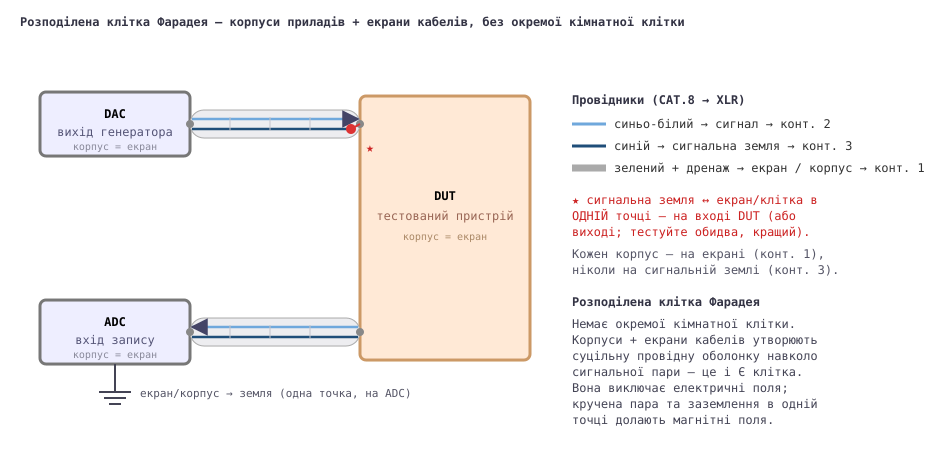

THD на рівні часток ppm і рівні шуму −150 дБВ мають сенс лише тоді, коли проводка між частинами стенда вносить менше шуму, ніж створює сам тестований пристрій. Ця сторінка показує, як генератор (DAC), тестований пристрій (DUT) і запис (ADC) з'єднані так, щоб зовнішні електромагнітні поля наводили якомога меншу напругу на проводах сигналу та сигнальної землі. Окремої кімнатної клітки немає: корпуси приладів і екрани кабелів разом утворюють одну суцільну провідну оболонку навколо сигнальної пари — розподілену клітку Фарадея, з'єднану через контакт 1 XLR і заземлену в одній точці.

Використовуйте комп'ютерний патч-кабель CAT.8 з крученою парою, оконцьований роз'ємами XLR. CAT.8 має подвійний екран: алюмінієво-ПЕТ фольгу навколо кожної пари плюс загальний екран навколо всіх чотирьох. Фольга — це суцільний, без отворів екран, на відміну від обплетеного екрана коаксіалу, сітки з безліччю дрібних отворів, крізь які просочуються поля. Скрутка — друга зброя: вона зменшує площу петлі між сигналом і зворотним проводом, тож магнітне поле наводить у послідовних скрутках однакові й протилежні ЕРС, які взаємно скасовуються.[1]
З'єднання несиметричне, по одній крученій парі, де фольга слугує окремим екраном корпусу:
| Жила CAT.8 | Контакт XLR | Роль |
|---|---|---|
| синьо-білий | 2 (гарячий) | Сигнал |
| синій | 3 (холодний) | Сигнальна земля (несиметричний зворотний) |
| зелений + зелено-білий + дренаж | 1 | Екран → корпус приладу |
Отже, сигнал (контакт 2) і сигнальна земля (контакт 3) — це синьо/синьо-біла кручена пара; зелена пара та дренажний провід усі йдуть на контакт 1 як екран/екран корпусу.
Сигнальна земля (контакт 3) з'єднується з екраном (контакт 1) рівно в одному місці — зазвичай на вході або виході DUT; перевірте обидва і залиште тихіший. Скрізь інде провід сигнальної землі ізольований від екрана й корпусу.
Якби сигнальна земля водночас слугувала екраном (як у звичайному несиметричному коаксіалі), будь-який струм, наведений зовнішнім полем в екрані, тік би через сигнальний зворотний провід і додавався б прямо до сигналу на вході DUT. Якщо дати екрану власний провідник (контакт 1, з'єднаний з кожним корпусом) і з'єднати з ним сигнальну землю лише в одній точці, ці екранні/вихрові струми отримують власний зворотний шлях, поза трактом сигналу.
Корпус кожного приладу з'єднано з екраном (контакт 1), ніколи із сигнальною землею (контакт 3). Екрани корпусів утворюють суцільний екран на потенціалі клітки/землі; сигнальна земля «плаває» на крученій парі й торкається цього екрана лише в єдиній зірковій точці на DUT.
Електричні поля — звичне джерело ємнісного фону — повністю
виключаються суцільною оболонкою екран/корпус (фольга навколо пари плюс
металеві корпуси утворюють один замкнений провідник). Магнітні поля
електростатичний екран не зупиняє; їх «переграють» мінімізацією площі петлі.
Оболонка трохи допомагає (зовнішнє змінне поле наводить вихрові
струми у стінках екран/корпус, які випромінюють слабше протилежне поле),
але головний захист — крихітна площа петлі крученої пари. Закон
Фарадея, V = ω·B·Aeff:
| Величина | Оцінка (50 Гц) |
|---|---|
| Фонове мережеве поле у звичайній кімнаті (B)[2] | ~0,1 мкТл (0,05–1 мкТл) |
| Залишок усередині клітки | ~0,05 мкТл |
| Площа петлі крученої пари (песимістично) | ~10 мм² = 1×10⁻⁵ м² |
| Наведена ЕРС | ≈ 0,16 нВ ≈ −196 дБВ |
Навіть навмисно песимістичний випадок — без послаблення оболонкою і з 10× площею петлі — дає ≈ 3 нВ ≈ −170 дБВ, усе ще на десятки дБ нижче власного шуму перетворювача (≈ −150…−160 дБВ на бін). Відмовтеся від дисципліни — нехай сигнальна земля водночас буде екраном, відкриваючи всю петлю кабель–корпус — і те саме поле наведе мікровольти (≈ −120 дБВ): чутний фон. Скрутка плюс заземлення в одній точці дають приблизно 50–80 дБ.
Та сама проводка живить будь-що в клітці — тут двійник-Т фільтр-пробка на 1 кГц і анти-RIAA фільтр: